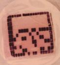
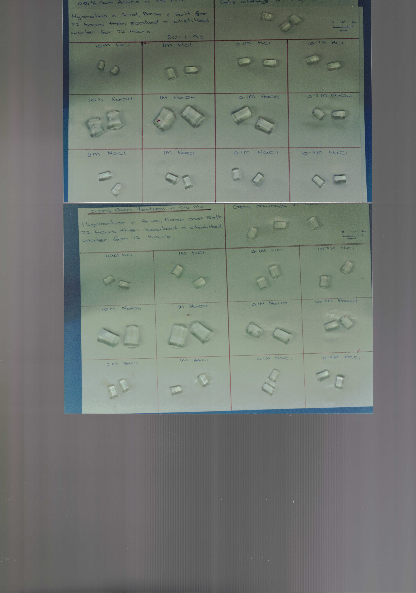

Conducting Polymer—Hydrogel Composites: Synthesis and Characterisation
Designed and built electrochemical systems for the synthesis and characterisation of conducting polymerâhydrogel composites,
including custom electrodes, reference systems, and measurement apparatus.
Overview
- Performed cyclic voltammetry, chronoamperometry, and related techniques for material characterisation
- Constructed Ag/AgCl reference electrodes and salt bridges using laboratory-grade materials
- Fabricated microelectrodes (Pt-in-glass capillary) with polished tips for controlled measurements
- Optimised apparatus design to enable efficient batching and significantly reduce experimental time
- Identified dynamic range limitations in bespoke instrumentation (QCM) and collaborated on solutions to improve signal resolution
- Integrated WH&S considerations into equipment design and experimental workflows
Techniques
- Electrosynthesis and chemical synthesis
- Cyclic Voltammetry (CV)
- Chronoamperometry (CA)
- Chronocoulometry (CC)—electrode area estimation from first principles
- Quartz Crystal Nanogravimetry (QCM)
Discussion
Discussion of techniques, design, purpose, and outcomes is under construction.
Gallery





